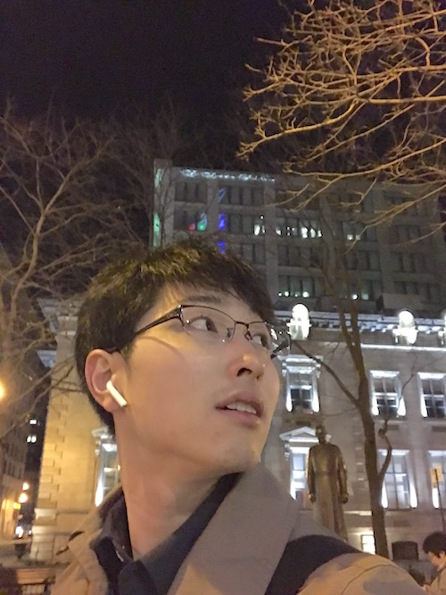

|  | 中村 拓人 | Takuto NAKAMURA | |
所属筑波大学 システム情報工学研究科 コンピュータサイエンス専攻 博士前期課程 インタラクティブプログラミング研究室（IPLAB） 〒305-8573 茨城県つくば市天王台1-1-1 中地区第3エリア 総合研究棟B1024 |
||
研究の興味分野
|
||
連絡先＆リンク
E-mail: nakamura(AT)iplab.cs.tsukuba.ac.jp |